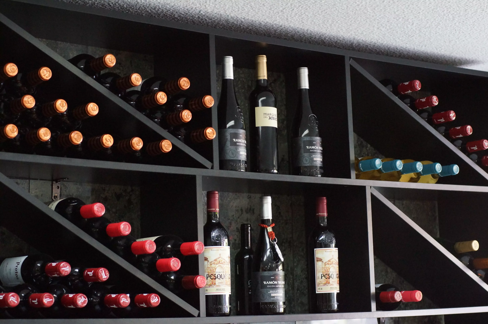

Sobre Nosotros
Amabilidad
Trato cercano y exquisito hacia el cliente. Ofrecemos nuestra mejor sonrisa, siempre dispuestos para que vd. salga satisfecho. La amabilidad y el buen trato es una premisa para nosotros.
Calidad
Nuestros productos son de 1ª calidad, con una gran selección de vinos, tanto de la marca Rioja, como de Ribera del Duero. Tenemos productos originarios de Soria, las patatas son las mejores del mercado.
Profesionalidad
El grado de profesionalidad estará a la altura de sus expectativas, personal muy cualificado para el trabajo al que se dedica. Ponemos todo nuestro amor y cariño en lo que hacemos.
Especialidades
Nuestros platos más queridos por el público que nos visita. Comprueben las delicias que les ofrecemos, los diferentes platos seguro que están al gusto de todos. Esperamos les guste y contemos con su visita.
Patatas Bravas
Alitas
Calamares
Caracoles
Croquetas
Matrimonio
Morcilla

Oreja
Tortilla
Comentarios
David G.

Local con muy buena ubicación en el barrio de Usera un trato correcto y agradable, gran calidad de sus platos tapas raciones etc... en especial sus patatas bravas qué son riquísimas. Variedad de bebidas y un vermut de grifo 100% recomendable calidad precio no duden en probar en este bar típico de Madrid
Eva C.
Bar de los de toda la vida, con una atención estupenda, una cerveza bien tirada y unas raciones muy ricas a un precio razonable. Buenísimas las bravas, los torreznos y los calamares(que no son congelados). Volveremos.
Lorena G.
Soy clienta habitual y lo que más me gusta es la amabilidad de los camareros y la ración de bravas, exquisitas, de las mejores. Recomiendo este bar para pasar un buen rato en compañía de amigos. Además, buenos precios y muy buena calidad de sus productos.
James F.
Si estás buscando un rinconcito de Soria, lo tienes aquí en el 58 de la calle Fornillos Usera. Aquí encontrarás las famosas Barritas Energéticas que te ayudarán a recuperar fuerzas y engreir a tu lado más goloso. Eres fan de las patatas bravas, éste el lugar ideal, son patas bravas de verdad, pican. (la salsa reza en un anuncio: patentadas con registro sanitario). Si te saben a poco las patatas, pidete una ración de oreja, calamares, sepia, caracoles, zarajos, morcilla, una de picada, esta muy buenas y ricas.
Mayte G.
Un sitio perfecto para disfrutar de las mejores patatas bravas y un montón de raciones riquísimas y tengo la suerte de vivir a 10 minutos.
Fernando R.
Buen sitio para tomar cañas, también tienen buenos vinos...plato estrella Las Bravas muy ricas, buenos profesionales, precios populares. Una visita obligatoria.
Quiénes Somos
Juanjo, Gerente.
Ester, Jefa de cocina.
Felipe, camarero.
Inés, cocinera.
Contacto
Nos encontramos en el barrio de Usera, cerca de la Plaza de Fernandez Ladreda, línea 6 de metro, parada Plaza Elíptica. Calle de Fornillos Nº 58, semiesquina con calle Marcelo Usera. Si les apetece visitar el Mesón será mejor que reserven llamando al teléfono 645 62 65 48.